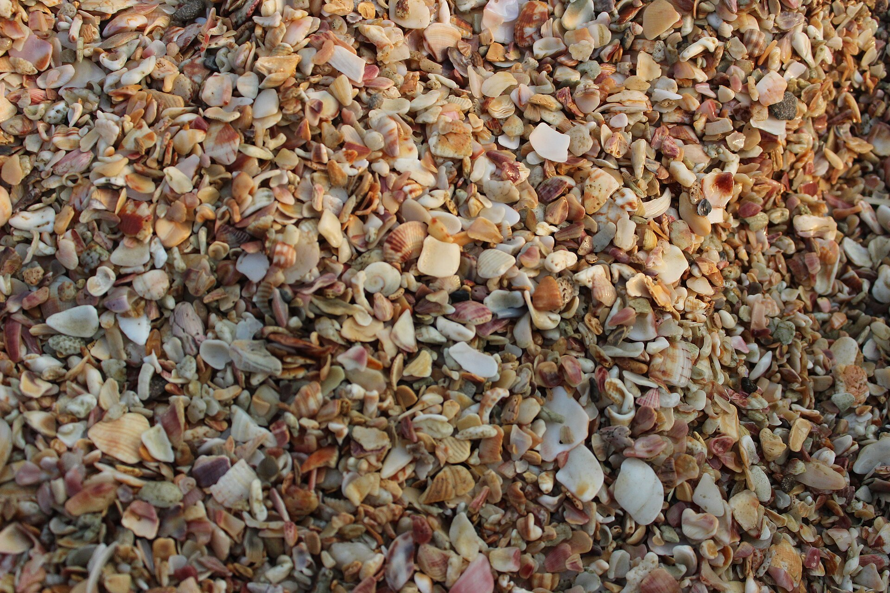
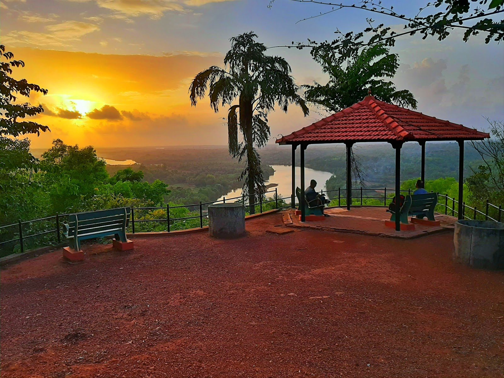
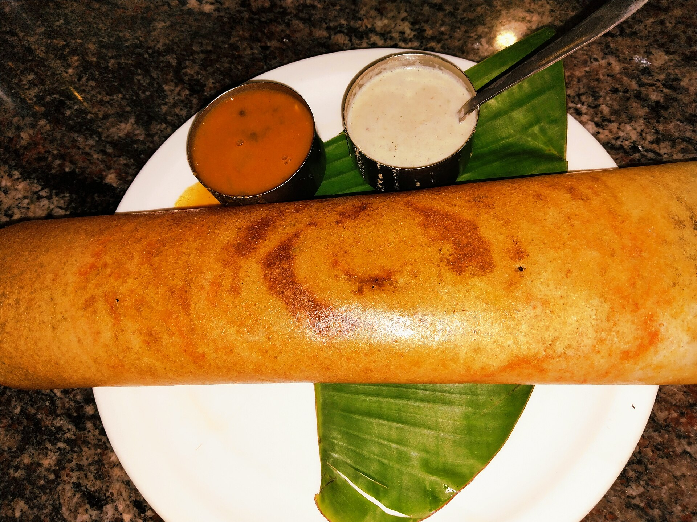
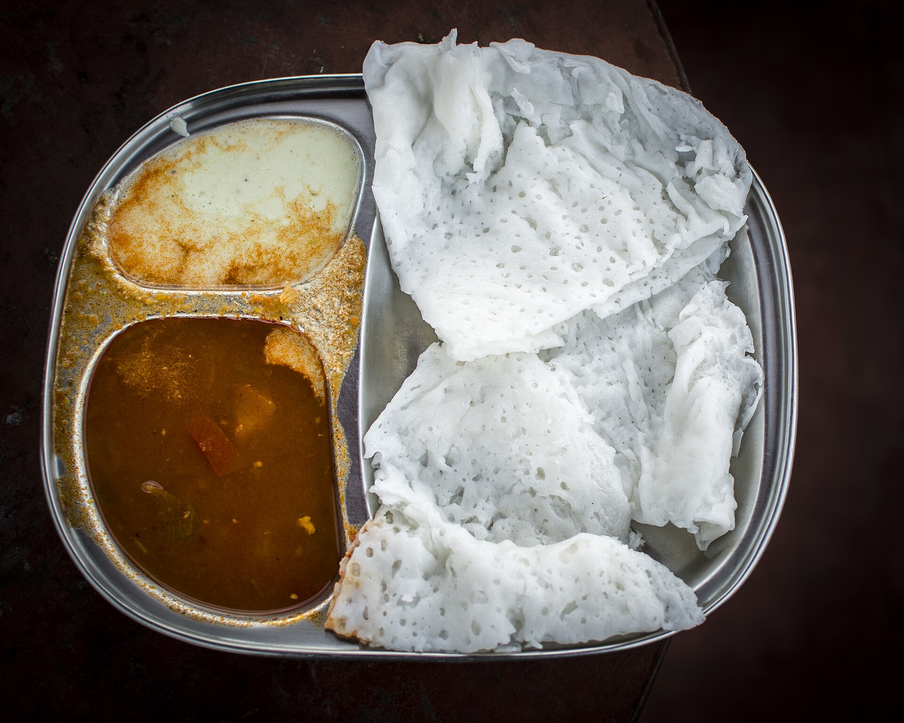

St Marys Island, Udupi.jpg · source



Masala Dosa 2023.jpg · source


NeerDosa.jpg · source


Wrong one? Set file for that id in lib/photos.mjs, then npm run photos -- --force --only=id. Or drop your own public/img/<id>.jpg.